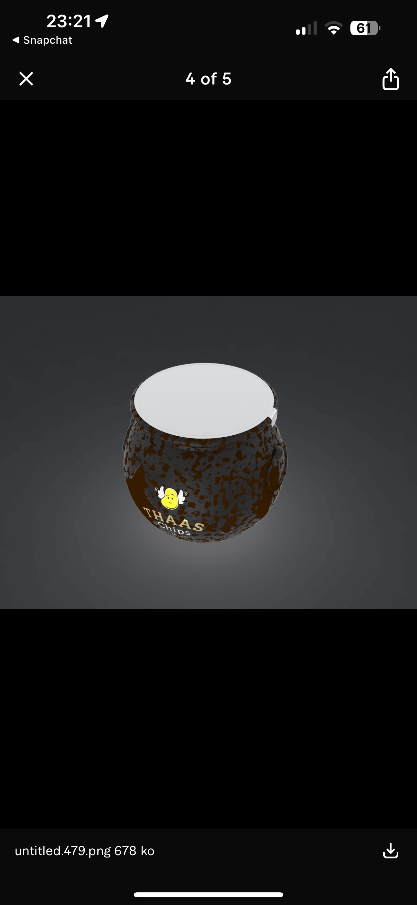
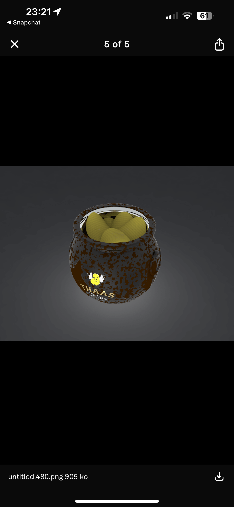
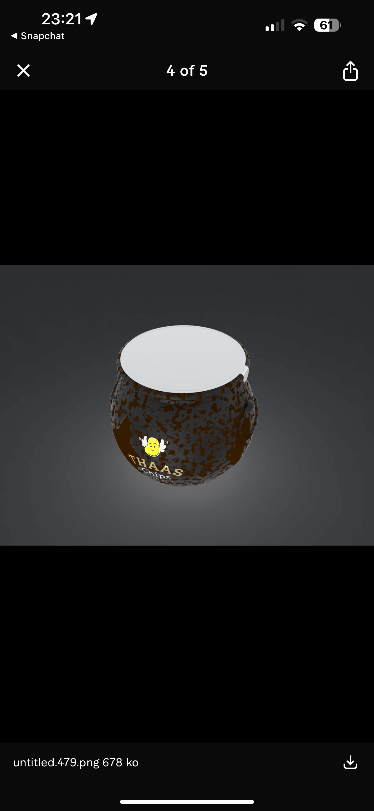
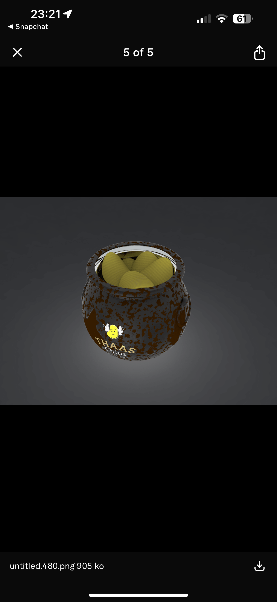

🎯 Objectif du projet
Comprendre les forces internes de l’entreprise, sa capacité de production, son identité de marque, ainsi que les opportunités et risques du marché dans lequel elle évolue.
Projet académique
Étude réalisée à NEOMA Business School — Programme TEMA · Parcours innovation, design et management.
Dans le cadre de mon parcours à NEOMA Business School, j’ai réalisé une analyse stratégique complète de Thaas Chips, une entreprise artisanale de chips premium basée sur un modèle “du champ au sachet”. Ce projet m’a permis d’explorer en profondeur la manière dont une PME agroalimentaire gère son identité de marque, son positionnement haut de gamme et ses enjeux de croissance.

 





Comprendre les forces internes de l’entreprise, sa capacité de production, son identité de marque, ainsi que les opportunités et risques du marché dans lequel elle évolue.
Approfondissement de ma capacité à analyser une entreprise dans sa globalité, identifier ses leviers de croissance et structurer une réflexion stratégique claire et actionnable.